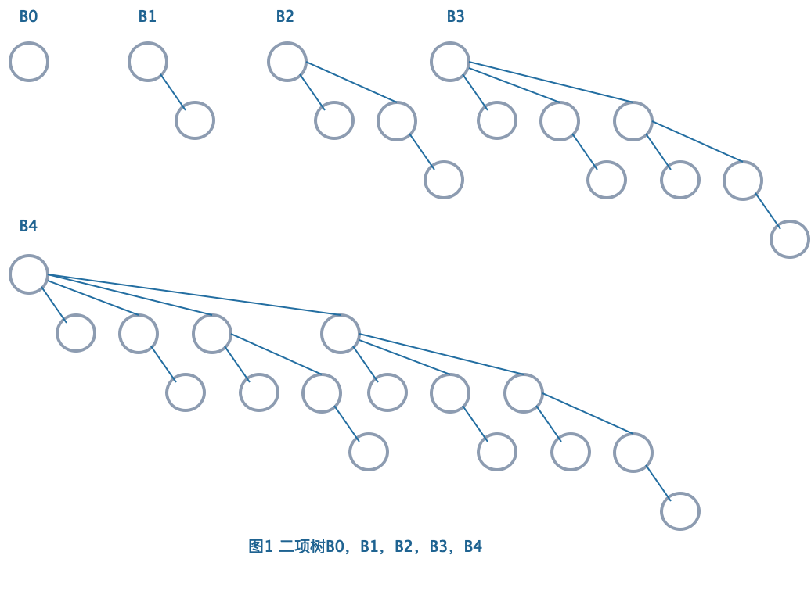

Chapter5 Binomial Queue 二项堆
5.1 基本概念
二项堆不是一棵树，而是由多棵树组成的森林，森林中的每一棵树是一棵二项树（binomial tree）。
记高度为$k$的二项树为$B_k$。将$B_{k-1}$的根节点连接到另一棵$B_{k-1}$的根节点上，作为其子树，得到的新树即为$B_k$（二项树的递归定义）。

性质：
- $B_k$的根节点有$k$个子节点
- $B_k$一共有$2^k$个节点
- $B_k$在深度为$d$（根节点深度为$0$）的节点数为$C_k^d$（二项堆名称的由来）
二项堆中的每个二项树都遵循最小堆的性质，即父节点的键值小于其孩子节点的键值。
不考虑具体键值，任意大小的优先队列可以被唯一表示为一个二项堆。
Example
如果优先队列有13个节点，由于$13=2^0+0\times 2^1+2^2+2^3=1101_2$，因此其可以表示为一个$B_0$，一个$B_2$，一个$B_3$组成的二项堆（注意：唯一表示中不可能出现两个$k$相同的$B_k$）。
5.2 操作
数据结构：
主结构：指针数列，第$i$个位置存放指向$B_i$的指针
二项树：链表，采用first-child-next-sibling的连接方式

struct BinQueue//二项堆的主结构定义
{
int N;//总节点数
BinTree Trees[MaxTree];//指针数列，存放指向每一棵二项树的指针
}
struct Node//二项堆的节点定义
{
KeyType Key;//键值
Position LeftChild;//左孩子
Position NextSibling;//右兄弟
}
FindMin
最小的节点位于某一个$B_k$的根节点处（二项堆里的二项树符合最小堆的性质）。
对于一个有$N$个节点的二项堆，最多有$\lceil\log N\rceil$棵二项树，因此最多需要检查根节点$\lceil\log N\rceil$次。
时间复杂度：
$$T=O(\log N)$$
Note
如果对二项堆内的二项树进行维护（例如以根节点的键值大小排序），那么FindMin操作的时间复杂度可降至$O(1)$。
Merge

实际上类似于二进制的竖式计算，一一合并的二项树深度相同，仅需比较根节点的键值，将大的连到小的上即可。
Merge所需的时间对应二进制位上合并的次数，一共需要合并的次数（位数）对应$H_1$和$H_2$的二项树棵数，二项树棵数对应$\log N$。
时间复杂度：
$$T=O(\log N)$$
其中$N=N_1+N_2$。
伪代码：
Insert
实际上是Merge的特殊情况。
时间复杂度：如果最小的空置二项树为$B_i$（数组第$i$个位置为NULL），则
$$T(N)=Const\cdot(i+1)=O(1)$$
从空堆开始连续插入$N$个节点的最差总耗时为$O(N)$，均摊时间复杂度为$O(1)$。（分析详见二进制计数器）
DeleteMin
定义一开始的二项堆为$H$。
-
第一步： 进行FindMin，找到最小元素，其所在二项树为$B_k$ 该步耗时：$O(\log N)$
-
第二步： 将$B_k$从$H$中移走，剩下的二项树组成的二项堆定义为$H'$ 该步耗时：$O(1)$
-
第三步： 单独对$B_k$操作，将$B_k$的根节点移走（$H$的最小元素），剩下的子树拆散成一棵棵二项树，形成的新的二项堆定义为$H''$ 该步耗时：$O(\log N)$
-
第四步： 对$H'$和$H''$进行Merge 该步耗时：$O(\log N)$
时间复杂度：
$$T=O(\log N)$$
伪代码：
DecreaseKey
假定已经知道要进行Decrease的节点的具体位置，接下来要做的只是不断地向上与父节点交换，直到恢复最小堆的性质
时间复杂度：
$$T=O(\log N)$$
5.3 回顾
| $~$ | 二叉堆 | 左式堆 | 斜堆 | 二项堆 | 斐波那契堆 |
|---|---|---|---|---|---|
| Insert | $O(\log N)$ | $O(\log N)$ | $O(\log N)$ | $O(1)$ | $O(1)$ |
| Merge | $O(N)$ | $O(\log N)$ | $O(\log N)$ | $O(\log N)$ | $O(1)$ |
| DeleteMin | $O(\log N)$ | $O(\log N)$ | $O(\log N)$ | $O(\log N)$ | $O(\log N)$ |
| DecreaseKey | $O(\log N)$ | $O(\log N)$ | $~$ | $O(\log N)$ | $O(1)$ |